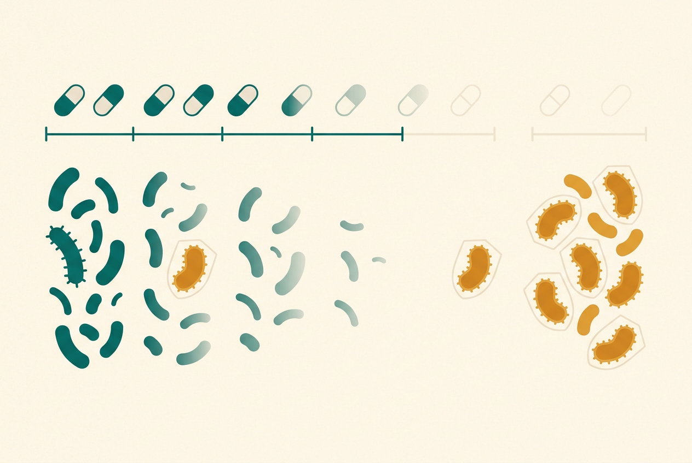

国家把药品分成两类：处方药必须凭医生处方，非处方药（OTC）可自行购买
"国家对药品实行处方药与非处方药分类管理制度。" —— 《中华人民共和国药品管理法》第五十四条
分类的逻辑很简单：风险越高的药，越需要专业人士把关。处方药（如抗生素、降压药）必须凭执业医师处方购买使用；非处方药（Over-The-Counter，简称 OTC）是经过长期临床验证、消费者可以凭说明书自行判断使用的药。这就是为什么同一个药店柜台，有的药伸手就能拿，有的必须出示处方。
认清药的"身份证" · 药在体内的旅程 · 退烧止痛药的安全线 · 药与食物的相互作用 · 抗生素的真相 · 特殊人群用药 · 读懂说明书 · 慢病药不能随便停 · 家庭药箱清单 · 谣言粉碎
药盒上的红绿小椭圆，是国家给药做的"风险分级"
"国家对药品实行处方药与非处方药分类管理制度。" —— 《中华人民共和国药品管理法》第五十四条
分类的逻辑很简单：风险越高的药，越需要专业人士把关。处方药（如抗生素、降压药）必须凭执业医师处方购买使用；非处方药（Over-The-Counter，简称 OTC）是经过长期临床验证、消费者可以凭说明书自行判断使用的药。这就是为什么同一个药店柜台，有的药伸手就能拿，有的必须出示处方。
国家根据非处方药品的安全性，将非处方药分为甲类非处方药和乙类非处方药；甲类专有标识为红色，乙类为绿色。 —— 《药品管理法实施条例》及《非处方药专有标识管理规定》
区别在两点：销售渠道——甲类（红标）只能在配备执业药师的药店买，乙类（绿标）经批准还可以在超市、便利店卖；安全等级——绿标是经过更长时间临床验证、安全性更高的那一档。所以下次买药，看一眼药盒角落的椭圆形 OTC 标识：红色提示"最好问问药师"，绿色相对更"傻瓜式"。但记住：OTC 也是药，不是食品——它同样有适应症、剂量上限和禁忌。
把三者的差别放在一张表里，买药前 10 秒钟就能对号入座：
| 对比项 | 处方药（Rx） | 甲类OTC（红色标识） | 乙类OTC（绿色标识） |
|---|---|---|---|
| 购买凭证 | 必须凭执业医师处方 | 无需处方，但须在药师指导下购买使用 | 无需处方，可自行判断使用 |
| 销售渠道 | 医院、凭处方药店 | 配备执业药师的药店 | 药店，经批准还可在超市、便利店等零售 |
| 安全性定位 | 风险较高，需专业把关（抗生素、降压药等） | 疗效确切、相对安全，仍可能有明显副作用 | 经更长期临床验证，消费者易于掌握的一档 |
| 典型例子（通用名） | 阿莫西林等抗生素、各类慢病处方药 | 部分退烧止痛药、抗过敏药 | 部分维生素类、外用制剂等 |
| 使用提醒 | 严格遵医嘱，不自行增减停 | 购买前问药师，看清剂量上限 | 也是药：看适应症与禁忌，不超量、不连用超期 |
两点常见误解先说清：①"处方药比 OTC 毒"不成立——分级依据是自我判断使用的风险，不是毒性大小，处方药在医生监控下往往更安全；②同一成分的药可能既有 OTC 规格（低剂量、短期自用）又有处方规格（高剂量、长期治疗），身份跟着"规格+用途"走。
通用名是药品的法定名称，同一种成分的药无论多少牌子，通用名都相同；商品名由各厂家自行注册。 —— 药品说明书和标签管理相关规定（通用名须显著标注）
这是普通人最容易吃亏的地方：不同商品名的药，可能装着同一种成分。比如几十种感冒药的核心成分都是"对乙酰氨基酚"——如果你只认商品名，同时吃两种"感冒药"，实际上是同一种成分双倍下肚（后果见第二节）。所以拿到药先看通用名（包装盒上字号最大的规范中文名称），再看适应症和剂量。
懂一点药代动力学，说明书上"一日三次""肝肾功能不全慎用"就不再是天书
药物必须进入血液循环才能到达作用部位；口服药物经胃肠道吸收后先经门静脉进入肝脏，部分药物在首次通过肝脏时即被大量代谢（首过效应），因此口服起效慢于注射。 —— 默沙东诊疗手册大众版"药物的吸收/分布"
把吃药想象成寄快递：口服是普通件——先经胃肠道吸收、过肝脏"安检"（部分药被当场拆掉一块，这叫首过效应），再进入全身循环，最后只有少部分"包裹"抵达病灶；静脉输液是加急直达件，跳过全部安检直接入血。这解释了两件事：①口服起效慢（30分钟到数小时），"吃了药怎么还不退烧"往往只是没到时间；②输液浓度瞬间拉满，过敏反应来得最快最猛——所以"能口服不肌注，能肌注不输液"（见第十节谣言一）。分布环节还决定了药能不能进胎盘、进乳汁——这是孕产妇用药需要格外谨慎的生理学原因（见第六节）。
大多数药物经肝脏代谢转化为更容易排出的物质，最终主要经肾脏随尿排出体外；肝功能或肾功能受损时，药物容易在体内蓄积，需要调整剂量。 —— 默沙东诊疗手册大众版"药物的代谢/消除"
肝脏是"拆药车间"：把药物分子改造成水溶性产物；肾脏是"排污口"：把产物随尿送出去。这条流水线解释了说明书上最常见的两句提示——"肝功能不全者慎用/减量""肾功能不全者慎用/减量"：车间或排污口坏了，同样剂量的药会在体内越积越多，相当于被动过量。对乙酰氨基酚伤肝（第二节）、布洛芬伤肾（第二节），本质上都是给这条流水线加负荷。也是因此，老年人（肝肾功能自然减退）常需要比成年人更低的起始剂量（见第六节）。
药物血浆浓度下降一半所需的时间称为半衰期；规律给药约经5–6个半衰期后，体内药物浓度达到相对稳定的水平（稳态）。 —— 默沙东诊疗手册"老年人药代动力学"
半衰期是理解一切服药间隔的钥匙：半衰期短的药（几小时），血药浓度掉得快，就得一日多次补货；半衰期长的药（几十小时），一日一次就够。"一日三次"的科学含义是把 24 小时分成三段维持浓度，而不是"跟着三顿饭吃"——除非说明书写明"餐时/餐后服"。另一个关键概念是稳态：规律服药要经过约 5–6 个半衰期，血药浓度才爬到稳定的治疗水平。这解释了很多慢病患者的困惑——降压药、部分抗抑郁药吃了三五天"没感觉"，很可能只是还没到稳态，此时自行停药或加量都是错误操作（详见第八节）。反过来，停药后药物也需要若干个半衰期才清干净，所以"昨天刚停药，今天喝酒"同样可能出事。
对乙酰氨基酚伤肝，布洛芬伤胃和肾——两条完全不同的安全线
患者每日服用对乙酰氨基酚的最大剂量为 4 克；超量有报道可导致严重肝损伤，包括急性肝衰竭、肝移植和死亡。 —— 国家药监局《药物警戒快讯》
它是绝大多数退烧药、感冒药的核心成分，正常剂量下很安全，但过量伤的是肝脏，而且早期症状（恶心、乏力）很像感冒本身，容易被忽略。默沙东诊疗手册给出的中毒量级：体重 70 公斤的人，一次服用超过 15 片 325 毫克片剂（约 5 克）就可能中毒。三个实用提醒：①自行购药使用时以说明书剂量为准（OTC 自用上限通常低于 4 克，且退烧连续使用不超过 3 天）；②服药期间不喝酒，酒精显著放大肝毒性；③儿童剂量按体重计算，用专用滴管/量杯，不用家用勺。
非甾体类抗炎药（NSAID，如阿司匹林、布洛芬、萘普生）可能有严重副作用，包括胃黏膜刺激、出血倾向增加、肾脏问题以及心血管疾病风险增加。 —— 默沙东诊疗手册大众版"治疗疼痛"
布洛芬属于 NSAID 家族，原理是抑制前列腺素合成来消炎止痛退烧——但前列腺素同时也是胃黏膜的保护层，这就是它伤胃的机制根源。新华社科普提醒：布洛芬虽是 OTC，常见轻中度胃肠道不适，严重者可出现消化道溃疡出血、肝肾功能损伤。四条实用边界：①随餐或餐后服，减轻胃刺激；②有胃溃疡病史、肾功能不全、正在吃抗凝药的人先问医生；③不与其它 NSAID（如阿司匹林、萘普生）叠加；④出现黑便、呕血、持续胃痛立即就医。剂量以说明书为准（OTC 自用与处方剂量上限不同）。
许多感冒药、咳嗽药中都含对乙酰氨基酚，同时服用多种药物易导致总量超标。 —— 药监部门药物警戒提示（复方感冒药重复用药风险）
典型场景：感冒了，白天吃一片复方感冒药，晚上又冲了一包感冒冲剂，睡前再来一片退烧药——三种药的商品名都不同，但翻到成分表一看，三种都含对乙酰氨基酚。每一包都没超量，加起来轻松破线。规则只有一条：同一时间只吃一种含相同成分的药；不确定的时候，把两盒药的说明书"成分"栏放在一起对一遍，或直接问药师。
同服的药物、甚至一杯果汁，都可能让药效翻倍、减半或变成毒性
当一种药物改变另一种药物的作用时即发生药物相互作用；相互作用可能导致药效增强、减弱，或产生意外的副作用。 —— 默沙东诊疗手册大众版"药物相互作用"
相互作用有三个方向：叠加（两种都有镇静作用的药同服，嗜睡加倍；两种 NSAID 同服，胃出血风险叠加——见第三节）；拮抗（一种药抵消另一种的药效）；代谢干扰（一种药拖慢肝脏"拆"另一种药的速度，让后者在体内蓄积到中毒浓度）。普通人不需要背药理表，只需要养成两个习惯：①就诊时把正在吃的所有药列一份完整清单给医生药师——包括处方药、OTC、中成药、保健品，医生才能替你排查；②在多家医院就诊、或自行加购 OTC 时，先问药师"和我正在吃的药冲突吗"。
默沙东诊疗手册整理的常见药物-食物相互作用，挑几个中国家庭最常撞上的：
| 食物/饮品 | 受影响药物（举例） | 后果与规则 |
|---|---|---|
| 酒精 | 对乙酰氨基酚；头孢类等 | 放大肝毒性；部分抗生素可引发双硫仑样反应（面红、心悸、呼吸困难）——服药期间及停药后一段时间内禁酒 |
| 西柚（葡萄柚）汁 | 部分降压药、降脂药等 | 抑制肝脏代谢酶，使血药浓度意外升高——服药前后避免饮用 |
| 牛奶、浓茶 | 部分抗生素、铁剂 | 钙、鞣酸与药物结合影响吸收——与服药时间错开（通常1–2小时以上，以说明书为准） |
| 深绿叶蔬菜（富含维生素K） | 华法林等抗凝药 | 抵消抗凝效果——不是不能吃，而是摄入量保持稳定并遵医嘱监测 |
| 空腹要求 | 双膦酸盐类（骨质疏松药）等 | 食物会大幅降低吸收——须清晨空腹、用白开水送服，服后保持直立（遵说明书） |
规则记一条就够：服药只用温白开水送服；特殊饮食要求以说明书和药师交代为准。
漏服药物的处理因药而异，请遵循药品说明书或医师、药师的指导；通常不建议一次服用双倍剂量来弥补漏服。 —— 药品说明书通用原则 / 默沙东诊疗手册大众版
"忘了吃，下次吃两片"是最常见的危险直觉：双倍剂量意味着血药浓度瞬间冲过安全窗（对乙酰氨基酚尤其如此，见第三节）。通用原则是：想起来时若离下次服药还远，立即补服；若已接近下次服药时间，跳过漏服的那次，按原计划继续，绝不加倍。但不同药物规则不同（避孕药、抗凝药等有专门的处理说明），以说明书"漏服处理"条目和药师指导为准。经常漏服的人，用药盒（一周七格）+ 手机闹钟是成本最低的两个工具。
它只杀细菌、不杀病毒；用错了，代价由全人类分摊
抗生素耐药性是对目前全球卫生、食品安全和发展的最大威胁之一。抗生素用于治疗细菌感染，对病毒感染（如普通感冒、流感）无效。 —— 世界卫生组织《抗生素耐药性实况报道》
中文里"消炎药"这个词害人不浅：嗓子疼、发烧、流鼻涕，很多人第一反应是"吃点消炎药（阿莫西林/头孢）"。但普通感冒和流感是病毒引起的（详见第7章），抗生素杀不死病毒，吃了只有副作用没有疗效。真正的"消炎药"是布洛芬那一类 NSAID（对抗红肿热痛），和抗生素是两码事。分清这一条，就避开了家庭用药里最常见的错误。
抗微生物药物耐药性的出现与传播，与药物误用和滥用直接相关；未按处方完成疗程等行为会筛选出耐药菌。 —— 世界卫生组织《抗微生物药物耐药性实况报道》
通俗版原理：一个疗程的抗生素就像一场"分批淘汰赛"——前几天的药量先杀死最弱的细菌，你感觉好转了；但最顽固的那批还在。这时停药，等于给幸存者放了假，它们大量繁殖，后代就是"耐药菌"。下次再感染，同一种药就不管用了。所以医生开了 7 天就是 7 天，"感觉好了就停"恰恰是最危险的做法。同样危险的还有：不吃剩下的药、不把自己的抗生素分给别人、不要求医生"开点抗生素预防一下"。
这不是吓唬人：WHO 2025 年 10 月发布的全球监测报告显示，超过 40% 的"抗生素-细菌"组合耐药率在上升，年均增幅 5%–15%。耐药性问题，正是由千万次"感觉好了就停药"累积出来的。

同一盒药，在这三类人身上的剂量规则完全不同
儿童用药剂量通常按体重（或体表面积）计算；应优先选用儿童专用剂型与规格，并使用专用量具给药。 —— 药品说明书儿童用药项通用原则
三个高频错误：①"成人药掰一半"——儿童剂量按体重计算，且很多药片不能拆分（缓释片、肠溶片掰开等于破坏剂型，药物瞬间全量释放）；说明书未标注儿童用法的药，不要自行给孩子用；②用家用瓷勺量糖浆——家用勺容量差好几倍，必须用附带的滴管/量杯；③烧一退就停药、烧再起就换药——退烧药是对症药，按说明书的间隔和天数使用（退烧连续使用不超过 3 天，见第三节），病因治疗交给医生。给孩子用任何 OTC 前，看说明书"儿童用法用量"一栏；写"尚不明确"或没有儿童规格的，先问医生药师。
随年龄增长，肝脏代谢与肾脏排泄能力下降、体内脂肪比例升高，药物更容易蓄积、半衰期延长；老年人常同时服用多种药物，相互作用与不良反应风险显著增加，通常应"从低剂量开始、缓慢加量"。 —— 默沙东诊疗手册"老年人药代动力学"
给家里老人管药，抓四件事：①一张清单——把老人正在吃的所有药（处方药+OTC+保健品）抄成清单，每次就诊带上，主动请医生核对能否精简；②低起点——医生给老年人开的起始剂量往往低于成人常规量，不要拿邻居的剂量做参照；③防跌倒——镇静催眠药、部分降压药在老年人身上易引起头晕跌倒，起身遵循"三个半分钟"（醒后躺半分钟、坐起半分钟、床边站半分钟）；④分药盒——多重用药最容易漏服重服，一周七格药盒+用药清单贴在药箱上。出现任何新症状（乏力、头晕、食欲差），先怀疑"是不是新加的药"，复诊时告诉医生。
许多药物可通过胎盘进入胎儿体内，也可经乳汁分泌；妊娠期与哺乳期用药须权衡利弊，由医师指导选择，说明书设有专门的妊娠期及哺乳期用药项。 —— 默沙东诊疗手册"药物在体内的分布" / 药品说明书编写规范
两个极端都危险：一种是孕期发烧、感染也硬扛不吃药——持续高热和未控制的感染本身就会伤害胎儿，该用的药在医生权衡下有安全选择；另一种是自行吃"经验药"——包括中成药和保健品，说明书"孕妇禁用/慎用"的药绝不能用。正确动作只有一条：备孕、怀孕、哺乳的任何阶段，用药前先问医生或药师，并主动告知孕周/哺乳状态；慢性病患者（甲状腺疾病、糖尿病、癫痫等）怀孕前就应和医生一起调整用药方案，而不是发现怀孕后自行停药。疫苗方面，孕期禁忌与推荐品种见第13章。
说明书是唯一具有法律效力的用药文本，比任何广告和"经验"都权威
药品说明书应包含药品名称与成分、适应症、用法用量、禁忌、注意事项、不良反应、规格、贮藏、有效期等内容；用药前应逐项核对。 —— 《药品说明书和标签管理规定》 / 默沙东"阅读药物标签"
按重要性排的速读顺序：①成分——看通用名，排查与手头其它药是否重复（第三节）；②适应症——确认"这个药治我这个症状吗"，OTC 自用只针对说明书列出的轻症；③用法用量——单次量、每日次数、每日上限、饭前饭后、疗程天数（退烧不超过3天、止痛不超过5天是 OTC 常见限制，以具体说明书为准）；④禁忌——写"禁用"的人群绝对不能用，这是全说明书最硬的红线；⑤注意事项——"慎用""不宜驾驶""避免饮酒"都在这；⑥不良反应——了解哪些属常见可耐受（如轻度胃不适），哪些需立即停药就医（皮疹、呼吸困难、黑便）；⑦贮藏与有效期——对照家里存放条件（第九节）。看不懂任何一栏，问药师——这是药师的法定职责。
药品上市后，监管部门持续监测不良反应并可能要求修订说明书（增加警示、修订禁忌）；说明书核准日期与最近修订日期载于说明书末尾。 —— 国家药监局药品说明书修订公告机制
"尚不明确"的准确含义是上市前研究数据不足，不是"经过验证没有不良反应"——恰恰是数据少，才更需要在医生药师指导下使用并留意身体反应。国家药监局会持续发布药物警戒提示并要求企业修订说明书（含中药制剂），所以：①家里常备药，留意药监部门的安全性公告；②拿到的说明书末尾有"核准日期/修订日期"，太旧的存药对照新公告；③用药后出现可疑症状，可通过就诊反馈给医生，我国建有国家药品不良反应监测系统。
依从性不是"听话"，是理解药物作用逻辑后的自我管理
高血压是慢性病，多数患者需要长期甚至终身药物治疗；血压达标是规范治疗的结果，擅自停药会导致血压再次升高和波动。 —— 《中国高血压防治指南（2024年修订版）》
这是慢病用药最核心的一句话逻辑：降压药像水库的闸门——闸门开着一天天放水，水位（血压）正常了，是因为闸门还开着；把闸门撤了（停药），水位必然回涨。糖尿病、甲状腺疾病等同理。"血压正常就减半片""血糖正常就停两天"都来自同一个误解。指南的正式表述是：血压正常是药物作用的结果，骤然停药引起的血压波动，危害比稳定的高血压更大——血压大幅波动对血管的冲击更剧烈。确需调整方案（出现副作用、血压偏低），流程是复诊→医生评估→逐步调整，不是自行动手。
提高治疗依从性是血压达标的关键；建议患者居家自测血压并记录，规律随访，不自行更改治疗方案。 —— 《中国高血压防治指南（2024年修订版）》患者管理部分
①记录：家庭自测血压/血糖并记录（早晚各一次，复诊带给医生），数据比"感觉"更能指导调药；②固定：把服药绑定在固定日常动作上（刷牙后/早餐时），配合分格药盒，减少漏服（漏服处理见第四节）；③复诊：按医嘱频率随访，即使指标稳定——医生需要定期评估肝肾功能、电解质和药物匹配度；④不比价换药：不同厂家同通用名的药一般可互换，但缓控释等特殊剂型不能随意替换，任何换药（包括"朋友说某某药更好"）都先问医生药师。出现干咳、脚踝水肿等疑似副作用，同样复诊解决——多数情况有替代方案，忍和停都不是答案。
原则：只放通用类别，不放处方余药；一年清两次
家庭急救箱应配备基础急救用品（绷带、纱布、弹性绷带、创可贴、剪刀镊子、体温计、手套等）及必要的非处方药。 —— 默沙东诊疗手册大众版"急救的基本物品"
按通用类别列一份"场景清单"（只列类别与通用名，不推荐任何品牌）：①发烧疼痛：对乙酰氨基酚或布洛芬（成人剂型+儿童专用剂型分开放）；②外伤护理：碘伏消毒液、无菌纱布、创可贴、弹性绷带、医用胶带、一次性手套；③过敏：氯雷他定或西替利嗪等抗组胺药（OTC）；④腹泻脱水：口服补液盐（这是腹泻护理里最重要的一样，见第8章）；⑤工具类：体温计、圆头剪刀、镊子、冰袋。慢性病患者的处方药按医嘱单独管理，不混入公共药箱。
| 类别 | 建议配置（通用名/物品） | 关键提醒 |
|---|---|---|
| 退烧止痛 | 对乙酰氨基酚 或 布洛芬；儿童专用剂型另配 | 成人/儿童剂型分开放；牢记每日上限与"退烧不超过3天" |
| 外伤护理 | 碘伏消毒液、无菌纱布、创可贴（多种规格）、弹性绷带、医用胶带、一次性手套、圆头剪刀、镊子 | 急救四技术（止血包扎固定搬运）见第4章 |
| 过敏 | 氯雷他定 或 西替利嗪 等抗组胺药（OTC） | 部分抗组胺药引起嗜睡，服后勿驾驶；严重过敏（呼吸困难）立即120 |
| 腹泻脱水 | 口服补液盐（Ⅲ） | 腹泻护理的第一要务是补液不是止泻（见第8章） |
| 体温监测 | 电子体温计 | 水银体温计破碎有汞暴露风险，家庭建议选电子式 |
| 冷敷 | 速冷冰袋 | 扭伤48小时内冰敷（PRICE，见第4章），隔布使用 |
| 慢病处方药 | 家人长期服用的处方药（按医嘱） | 单独管理、贴好姓名与用法，不混入公共药箱，不外借 |
| 资料 | 全家用药清单、附近夜间药房与中毒/急救电话 | 就诊时带上用药清单（见第四节） |
药品应在说明书规定的条件下贮存（多数为避光、阴凉干燥处）；超过有效期的药品不得使用。 —— 药品说明书和标签管理规定及药监部门安全用药提示
四个存放要点：①保留原包装和说明书——换到分装瓶里等于扔掉了剂量、禁忌和有效期信息；②避光、阴凉、干燥，浴室和厨房灶台旁是最差的位置（湿热）；多数药品室温保存即可，说明书注明冷藏的（如部分益生菌、胰岛素）才放冰箱；③放在儿童够不到的地方，儿童误服是家庭中毒的首要原因之一；④每半年清一次箱：过期药、性状改变（变色、潮解、浑浊）的药淘汰，通过社区过期药品回收点处理，不要直接冲马桶或扔生活垃圾。
以国家卫健委健康科普辟谣平台与药监部门提示为准
粉碎：普通感冒是自限性疾病，靠免疫系统自己 clearing，病程约一周，输液不会缩短它（第7章详述）。而输液是风险最高的给药方式——直接进入血液，过敏反应来得又快又猛。"能口服不肌注，能肌注不输液"是卫生部门多年倡导的用药原则。国家卫健委专门开设健康科普辟谣平台，"输液好得快"正是被反复点名的典型误区。
粉碎："天然"不等于"无毒"。中药同样是药，有适应症、剂量和禁忌：药监部门多次发布药物警戒提示，例如含马兜铃酸的中药材可导致不可逆的肾损伤（马兜铃酸肾病）并有致癌风险，多个含此类成分的品种已被修订说明书或禁用。中成药的说明书上"不良反应尚不明确"只代表研究数据不足，不代表没有风险。正确姿势和西药完全一样：看说明书、遵医嘱、不叠加同类成分、不长期自行服用。
粉碎：双重错误。第一，抗生素是处方药，这次的"发炎"是不是细菌感染、该用哪一种、用几天，都需要医生判断——上次的药对这次的病未必有效，病毒引起的炎症则完全无效（见第三节）。第二，剩药往往凑不满一个疗程，"半疗程"用药正是培养耐药菌的标准操作（原理见第三节）。剩的抗生素不应留在家里，应通过回收渠道处理。
粉碎：保健食品的法律定位是食品，不是药品——不得宣称治疗功能，正规产品标签必须声明"保健食品不是药物，不能代替药物治疗疾病"。凡是宣称"根治高血压""替代胰岛素""几个疗程断根"的产品，可直接判定为违法宣传并向市场监管部门（12315）举报。更危险的操作是听信推销把处方药停了、换成"纯天然调理"——血压血糖失控的后果见第八节。正确关系是：慢病治疗以规范药物为主，任何保健品的添加都应告知医生（部分成分与药物相互作用，见第四节）。